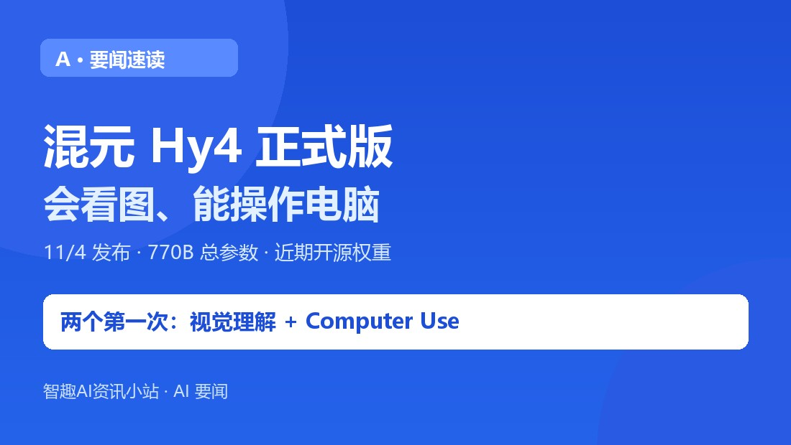
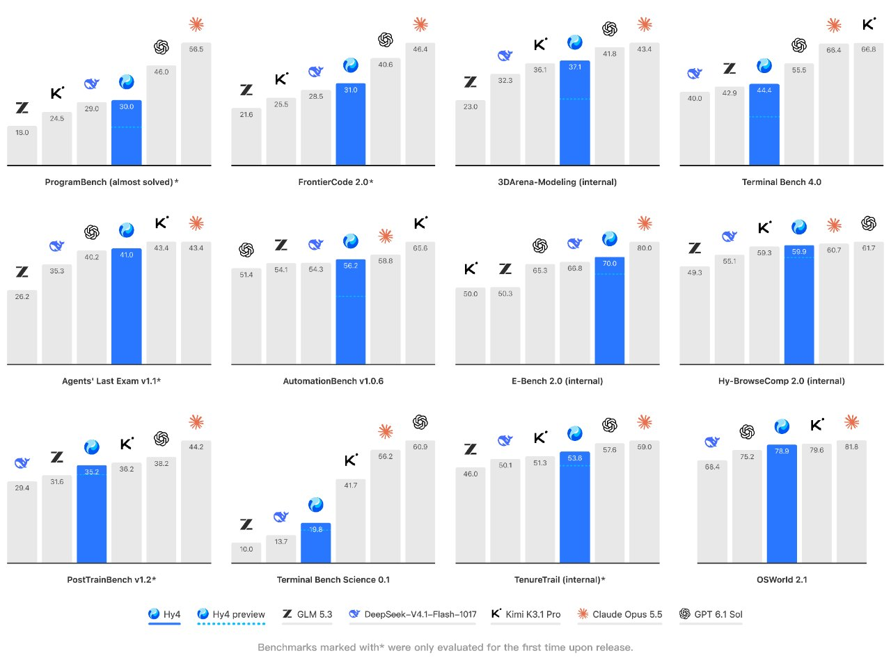
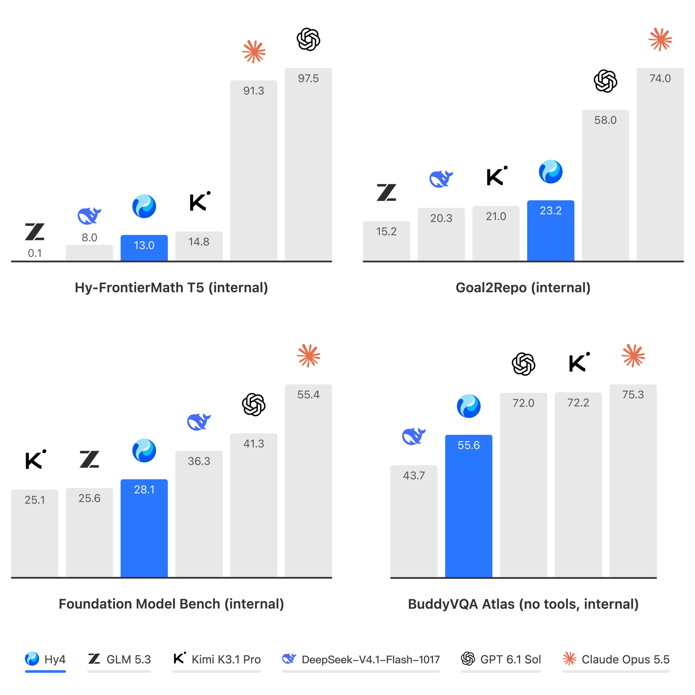
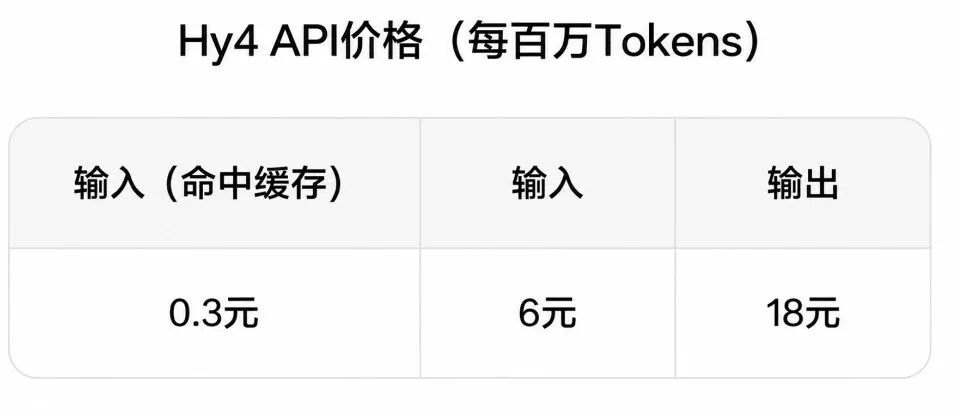

小智
AI 资讯站。只报真事，不制造焦虑。
长按识别二维码 · 关注不迷路
A · 要闻速读
11 月 4 日 Hy4 正式版发布：770B 参数，第一次会看图、第一次能操作电脑。
模型不是发布完再找场景，而是和产品一起调——考场从「答得对」变成「活干完」。

11 月 4 日，腾讯混元发布 Hy4 正式版：770B 总参数、49B 激活参数的 MoE 架构，首次引入视觉理解能力，首次支持电脑操作（Computer Use），官方称首次跻身最强开源模型之列，模型权重与系统卡片将于近期开源。它已同步上线腾讯云 TokenHub、WorkBuddy、CodeBuddy、元宝、ima 和企业微信智能助理「大圆」。

第一次会看图：把视觉信号转成模型可统一处理的 token，能处理细粒度图像、复杂图表、带图数学题，甚至从卫星图里定位某个屋顶构件。以前你只能把图里的信息打字描述给它，现在直接给图。
第一次能动手：结合命令行与图形界面执行任务，针对 Blender、CAD 等专业软件和跨应用长程任务做了专项训练。它还能把前端与游戏开发做完整——不只是画个好看的界面，而是交互、状态管理、前后端联动都能跑。
腾讯官方把这叫 Co-Design——模型不是发布完再找场景，而是和内部产品一起调。数字也很直接：
- 办公场景：WorkBuddy 评测平均 83.18 分、通过率 96.15%，12 个场景中 9 个国内第一；「人机双写」的文档美观度与稳定性明显提升；
- 金融众测：213 位专家、579 项任务，综合 3.04 分，开源模型第一；
- 自建搜索测试：幻觉率从 preview 的 15.76% 降到 5.45%；
- 接入方式：开发者走腾讯云 TokenHub 的 OpenAI 兼容接口，普通用户在元宝、WorkBuddy 里直接用。

- 普通办公族：不用装新软件——WorkBuddy 里改文档、元宝里传图问问题，背后已经是新模型；
- 开发者：OpenAI 兼容接口意味着换模型不用重写调用代码；权重开源后还能自己部署；
- 企业 IT：官方明确把网络与生物安全风险列为「更负责任的开源」重点，说明强模型的发布方式正在从「先放出来」变成「先划边界」。
腾讯自己也说得很清楚：与顶尖闭源模型仍有较大差距。另外三点要留意：
- 权重是「近期开源」，目前还没放，许可条款也还没看到；
- 办公、金融评测多为官方或内部口径，不等于所有真实场景；
- 专业能力有训练范围：Blender、CAD 覆盖过，别的软件得实测。
打开 WorkBuddy 或元宝，找一份带图表的 PDF 或一个截图，直接问它「这张表里哪一列增长最快、为什么」——这是 Hy4 新增的视觉理解最容易被验证的场景。开发者则去 TokenHub 看一眼模型列表，确认自己的调用代码是否需要改（大概率不用）。

事实依据
11/4 腾讯混元发布 Hy4 正式版：770B 总参数 / 49B 激活 MoE，首次引入视觉理解与电脑操作（命令行 + 图形界面），针对 Blender、CAD 与跨应用长程任务专项训练；官方称跻身最强开源模型之列，权重与系统卡片近期开源，重点提示网络与生物安全风险。已上线腾讯云 TokenHub、WorkBuddy、元宝、ima。办公评测平均 83.18 分、12 场景 9 个国内第一，人机双写提升；金融众测 3.04 分；幻觉率 15.76% 降至 5.45%。官方承认与顶尖闭源模型仍有差距。据腾讯官网、腾讯混元官网、人民网、腾讯云（2026.11）。
核查时间：2026 年 11 月 7 日。
TAKEAWAY
Hy4 这一步的意义不在参数，而在模型与产品一起设计——会看图、能动手之后，AI 的考场从「答得对不对」变成了「活干没干完」。但记住：最强开源之一 ≠ 最强，权重也还没放出来。
小智
AI 资讯站。只报真事，不制造焦虑。
长按识别二维码 · 关注不迷路
小智：会看图、能动手之后，比参数更值得看的是它进了哪些产品。